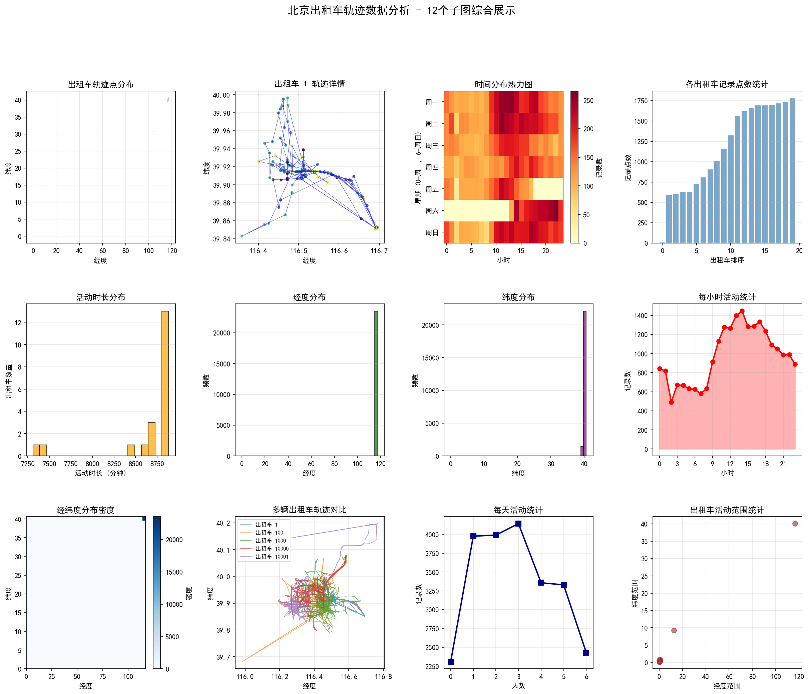

数据集 · Beijing T-Drive 2008

真实数据 · 北京 T-Drive 出租车 1 号 2008-02-02 全天轨迹（481 个采样点，已去重）。点击放大。红色 = 市中心活动段，蓝色 = 夜间驻车段。

真实数据 · 三辆出租车各自的轨迹形态：有的在城区密集穿行，有的直奔远郊又返回，运营半径完全不同。
真实数据 · 12 面板图：①轨迹散点 ②单车轨迹 ③时间热力图（小时×星期） ④各车记录数 ⑤活动时长 ⑥⑦经纬度分布 ⑧每小时活动 ⑨二维密度 ⑩多车对比 ⑪每日活动 ⑫活动范围
北京：经典中的经典
2008 年，微软亚洲研究院想做基于真实轨迹的交通研究，于是采集了北京 10,357 辆出租车连续一周（2008-02-02 至 02-08）的 GPS 轨迹，命名为 T-Drive。它后来成了轨迹数据挖掘领域引用最多的标准基准数据集—— 几乎所有经典论文（轨迹聚类、路线推荐、交通流量预测）都用它做过实验。 用今天的话说，这是轨迹分析圈的"ImageNet"。
车辆数
10,357
规模大 → 覆盖广
轨迹文件
8,911
每辆车一个 .txt
采样间隔
~10 分钟
2008 年技术成本所限
字段数
4
谁 / 几点 / 在哪
字段：极简四件套
北京数据没有表头，每行四个数字，逗号分隔。字段少，但"够用"——空间分布、轨迹聚类、OD 分析都靠它：
- taxi_id出租车 ID，与文件名一致。作用：把文件里的点连成一辆车的轨迹。1
- timestamp本地时间戳。作用：排序、算速度、分时段。2008-02-02 15:36:08
- longitude经度 (WGS-84)。范围约 116.4°-116.7°E。116.51172
- latitude纬度 (WGS-84)。范围约 39.8°-40.0°N。39.92123
📌
缺了什么，意味着什么：没有速度、没有载客状态——所以北京数据
做不了"空车巡游分析"和"驾驶行为分析"；但正因为字段少、格式统一、规模大，
它是做空间分析最顺手的。选数据集 = 选你能回答的问题。
单车的一天：轨迹长什么样？
先看最基础的：一辆车（1 号）一天的轨迹。颜色代表当天时刻，从早到晚由紫变黄。 你能直观看到两种状态：
- 移动段：下午在市中心一带穿行（红色箭头附近），点连成的线就是行驶路线；
- 驻车段：21:40 之后坐标几乎钉在 (116.6916, 39.8516)，一动不动到凌晨——司机收车了。
💡
这张图回答了一个真实问题："一辆出租车一天都干了什么？"
答案：下午在市内拉活，晚上停在一个固定点不动。
把这种"移动-静止"的模式对一万辆车重复一遍，你就得到了城市的
运营时空结构——这正是分析的基础素材。
不同的车，不同的"性格"
三辆车的轨迹并排看（圈=当天第一个点，叉=最后一个点），"性格"差异立刻显现：
🧭
观察：轨迹形态 = 运营策略
1 号车轨迹集中在市中心（短途高频）；50 号车从中心一路开到东郊（长途）——这反映了 不同司机不同的"找活"策略。分析上，可以把每辆车的活动半径、平均速度、 行驶里程算出来做聚类，区分"城区短线型"和"郊区长线型"司机。
12 面板综合图
单看一辆车只能看到个体。把 20 辆车的样本合起来画成 12 个子面板， 就能从空间、时间、统计三个维度回答"这个城市一天什么样"：

| 面板 | 在看什么 | 你能得到的结论 |
|---|---|---|
| ① 轨迹散点 | 所有点叠加的空间密度 | 轨迹集中在 116.45°-116.55°E / 39.90°-39.95°N，即 2008 年的市中心核心区 |
| ③ 时间热力图 | 星期 × 小时两个维度的活跃度 | 白天 8-19 时明显活跃，傍晚 17-19 时是高峰（通勤），深夜显著冷清 |
| ⑧ 每小时活动 | 一天 24 小时的记录数曲线 | 双峰结构：上午一个峰、傍晚一个峰，符合出租车需求规律 |
| ⑫ 活动范围 | 每辆车经度跨度 × 纬度跨度 | 大部分车活动范围小而集中，少数车跨度大（长途运营） |
真实样本：1 号车前 51 条记录
以下数据逐行来自仓库 raw/beijing/.../T-Drive trajectory data sample/1.txt，
完整文件有 588 行。注意观察 21:40 之后坐标几乎不变的驻车现象：
| taxi_id | timestamp | longitude | latitude |
|---|---|---|---|
| 1 | 2008-02-02 15:36:08 | 116.51172 | 39.92123 |
| 1 | 2008-02-02 15:46:08 | 116.51135 | 39.93883 |
| 1 | 2008-02-02 15:46:08 | 116.51135 | 39.93883 |
| 1 | 2008-02-02 15:56:08 | 116.51627 | 39.91034 |
| 1 | 2008-02-02 16:06:08 | 116.47186 | 39.91248 |
| 1 | 2008-02-02 16:16:08 | 116.47217 | 39.92498 |
| 1 | 2008-02-02 16:26:08 | 116.47179 | 39.90718 |
| 1 | 2008-02-02 16:36:08 | 116.45617 | 39.90531 |
| 1 | 2008-02-02 17:00:24 | 116.47191 | 39.90577 |
| 1 | 2008-02-02 17:10:24 | 116.50661 | 39.91450 |
| 1 | 2008-02-02 20:30:34 | 116.49625 | 39.91460 |
| 1 | 2008-02-02 20:40:33 | 116.50962 | 39.91071 |
| 1 | 2008-02-02 20:50:33 | 116.52231 | 39.91588 |
| 1 | 2008-02-02 20:50:33 | 116.52231 | 39.91588 |
| 1 | 2008-02-02 21:00:33 | 116.56444 | 39.91445 |
| 1 | 2008-02-02 21:10:33 | 116.59512 | 39.90798 |
| 1 | 2008-02-02 21:30:33 | 116.65522 | 39.86220 |
| 1 | 2008-02-02 21:40:33 | 116.69164 | 39.85165 |
| 1 | 2008-02-02 21:50:33 | 116.69167 | 39.85166 |
| 1 | 2008-02-02 22:10:32 | 116.69168 | 39.85168 |
| 1 | 2008-02-02 22:20:32 | 116.69168 | 39.85167 |
| 1 | 2008-02-02 22:30:32 | 116.69167 | 39.85169 |
| 1 | 2008-02-02 22:40:33 | 116.69167 | 39.85172 |
| 1 | 2008-02-02 22:50:33 | 116.69167 | 39.85174 |
| 1 | 2008-02-02 23:00:32 | 116.69167 | 39.85175 |
| 1 | 2008-02-02 23:10:32 | 116.69167 | 39.85176 |
| 1 | 2008-02-02 23:20:32 | 116.69172 | 39.85208 |
| 1 | 2008-02-02 23:20:32 | 116.69172 | 39.85208 |
| 1 | 2008-02-02 23:30:32 | 116.69172 | 39.85199 |
| 1 | 2008-02-02 23:40:32 | 116.69171 | 39.85196 |
| 1 | 2008-02-02 23:50:32 | 116.69171 | 39.85182 |
| 1 | 2008-02-03 00:00:32 | 116.69171 | 39.85184 |
| 1 | 2008-02-03 00:10:32 | 116.69170 | 39.85184 |
| 1 | 2008-02-03 00:20:32 | 116.69170 | 39.85184 |
| 1 | 2008-02-03 00:30:32 | 116.69168 | 39.85146 |
| 1 | 2008-02-03 00:40:32 | 116.69172 | 39.85165 |
| 1 | 2008-02-03 00:50:32 | 116.69176 | 39.85165 |
| 1 | 2008-02-03 01:00:32 | 116.69168 | 39.85163 |
| 1 | 2008-02-03 01:10:32 | 116.69166 | 39.85159 |
| 1 | 2008-02-03 01:40:31 | 116.69164 | 39.85186 |
| 1 | 2008-02-03 01:50:31 | 116.69167 | 39.85196 |
| 1 | 2008-02-03 02:00:32 | 116.69167 | 39.85167 |
| 1 | 2008-02-03 02:21:26 | 116.69176 | 39.85183 |
| 1 | 2008-02-03 02:30:31 | 116.69173 | 39.85174 |
| 1 | 2008-02-03 02:50:32 | 116.69172 | 39.85179 |
| 1 | 2008-02-03 03:00:32 | 116.69171 | 39.85176 |
| 1 | 2008-02-03 03:10:31 | 116.69170 | 39.85176 |
| 1 | 2008-02-03 03:20:31 | 116.69164 | 39.85165 |
| 1 | 2008-02-03 03:30:31 | 116.69155 | 39.85181 |
| 1 | 2008-02-03 03:40:31 | 116.69158 | 39.85180 |
| 1 | 2008-02-03 03:50:31 | 116.69156 | 39.85141 |
📌
在这 51 行里你至少能发现 3 个真实数据现象：
① 第 3 行和第 2 行重复（GPS 抖动）；② 15:46 → 20:30 之间有一条 3 小时的时间断裂
（数据缺失，车可能没信号）；③ 21:40 之后坐标几乎不动（驻车）。
处理这些现象，就是第 2 课讲的"清洗"。
这个数据集适合做什么？
- 轨迹聚类：把一万辆车的轨迹聚类成典型路径（DBSCAN / TRACLUS）。
- 城市热点识别：找高频上客区（但缺 passenger 字段，需用停留点推断）。
- OD 出行结构：用"移动段"的起终点估算区域间出行量。
- 作为算法基准：新算法先在 T-Drive 上跑，再跟历史论文对比。